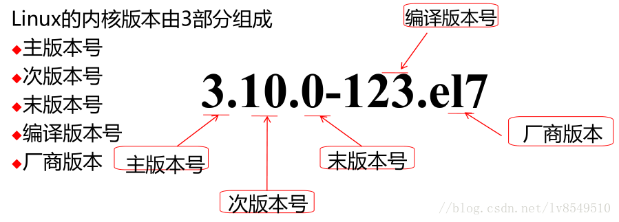

Linux起源：
1991 年的10 月5 日，Torvalds 在comp.os.minix
新闻组上发布消息，正式向外宣布他自行编写的
完全自由免费的内核诞生（Freeminix-like
kernel sources for 386-AT ）———FREAX
英文 含义是怪诞的、怪物、 异想天开
类Unix 的内核，在GPL 下发布
官网：www.kernel.org
Linux 操作系统 ：
完整的类UNIX 操作系统
Linux 内核+ GNU 工具
如：CentOS,Ubuntu,Android
Linux主流发行版
linux有三大主流源头发行版，分别为
slackware: 由Novell公司发布维护
SUSE Linux Enterprise Server (SLES) 企业版
OpenSuse 个人版版
debian: 由Debian维护社区发布
Ubuntu 以桌面应用为主的开源GNU/Linux操作系统
Linux Mint:为家庭用户和企业提供一个不花钱的，易用的，并且漂亮的桌面系统
redhat：由Redhat发布
RHEL: RedHat Enterprise Linux 企业版 每18个月发行一个新版本
CentOS ：兼容RHEL的格式 企业版
中标麒麟：中标软件
Fedora ：个人版 每6个月发行一个新版本
ArchLinux ：轻量简洁
Gentoo ：极致性能， 不提供传统意义的安装程序
更多详情可参考 Linux 分支参考网站：http://futurist.se/gldt/
linux内核版本

linux哲学思想
一切都是一个文件（包括硬件）：
linux系统是由各种类型不同的文件组成，但是操作文件的方法却是相同的
小型，单一用途的程序：
程序和可执行文件不要太复杂，这样才能保证了linux内核的高效运行
链接程序，共同完成复杂的任务：
复杂的功能可以通过连接多个用途单一的程序组合实现，在保证简单程序的高效性的同事，复杂程序也必然高效
避免令人困惑的用户界面：
linux是开源系统的，无论什么问题都可以通过简洁的命令行实现 排错，修改系统的配置，一切都是简洁明了为基础。
而图形化用户界面如果遇到问题，无法知道错误的原因，只能通过重启来解决问题，再不行就重装系统配置数据存储在文本中：
linux所有的配置文件都存放在文本配置文件当中，无论什么如何操作系统都只需修改其配置文件即可